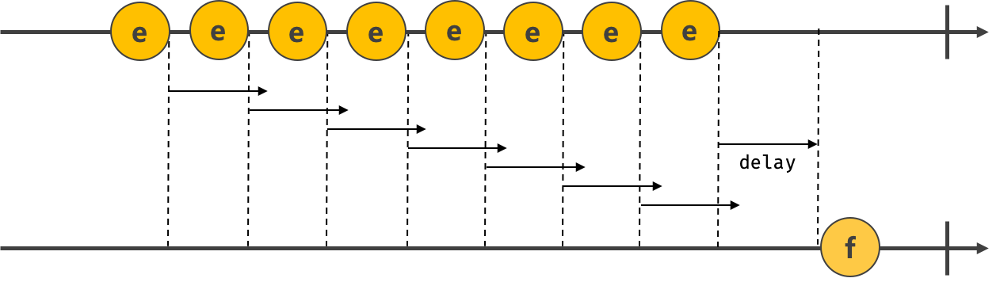
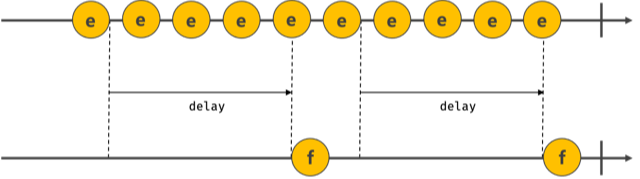

호출 스케줄링
함수를 명시적으로 호출하지 않고 일정 시간 경과 후 호출되도록 함수 호출을 예약하려면 타이머 함수를 사용한다. 자바스크립트에서는 타이머를 생성할 수 있는 타이머 함수 setTimeout과 setInterval, 타이머를 제거할 수 있는 타이머 함수 clearTimeout과 clearInterval을 제공한다.
타이머 함수 setTimeout과 setInterval은 모두 일정 시간이 경과된 이후 콜백 함수가 호출되도록 타이머를 생성한다. setTimeout 함수로 생성한 타이머는 단 한 번 동작하고, setInterval 함수가 생성한 타이머는 반복 동작한다.
자바스크립트 엔진은 단 하나의 실행 컨텍스트 스택을 갖는 싱글 스레드로 동작한다. 이런 이유로 타이머 함수 setTimeout과 setInterval은 비동기 처리 방식으로 동작한다.
타이머 함수
setTimeout / clearTimeout
1
2
3
4
5
6
7
8
9
10
11
12
13
14
15
16
// 첫 번째 인수로 콜백 함수를 전달한다.
// 두 번째 인수인 1000은 1초(1000ms) 이다.
setTimeout(() => console.log('Hello'), 1000);
// 세 번째 이후의 인수는 콜백 함수로 전달할 인수이다.
setTimeout(() => name => console.log(`${name}`), 1000, 'Roy');
// 두 번째 인수를 생략할 경우 기본값 0이 지정된다.
setTimeout(() => console.log('Hello'));
// setTimeout 함수는 생성된 타이머를 식별할 수 있는 고유한 타이머 id를 반환함
const timerId = setTimeout(() => console.log('Hello'), 1000);
// clearTimeout 함수는 타이머 id를 인수로 전달받아 해당 타이머를 제거한다.
clearTimeout(timerId);
setInterval / clearInterval
1
2
3
4
5
6
7
8
9
10
11
let count = 1;
// 1초 간격으로 콜백 함수 호출
const timeoutId = setInterval(() => {
console.log(count);
// count가 5일 경우 clearInterval 함수로 타이머 제거
if(count++ === 5) clearInterval(timeoutId);
}, 1000);
디바인스와 스로틀
scroll, resize, input, mousemove와 같은 이벤트는 짧은 시간에 연속적으로 발생한다. 이러한 이벤트에 바인딩한 이벤트 핸들러를 과도하게 호출되어 성능에 문제가 발생한다. 디바운스와 스로틀은 이러한 이벤트를 그룹화해서 과도한 이벤트 핸들러의 호출을 방지하는 프로그래밍 기법이다.
1
2
3
4
5
6
7
8
9
10
11
12
13
14
15
16
17
18
19
20
21
22
23
24
25
26
27
28
29
30
31
32
33
34
35
36
37
38
39
40
41
42
43
44
45
46
47
48
49
50
51
52
53
<!DOCTYPE html>
<html>
<body>
<button>click</button>
<pre>일반 이벤트 카운터 <span class="normal">0</span></pre>
<pre>디바운스 이벤트 카운터 <span class="debounce">0</span></pre>
<pre>스로틀 이벤트 카운터 <span class="throttle">0</span></pre>
<script>
const $button = document.querySelector('button');
const $normal = document.querySelector('.normal');
const $debounce = document.querySelector('.debounce');
const $throttle = document.querySelector('.throttle');
const debounce = (callback, delay) => {
let timerId;
return event => {
// delay가 경과하기 이전의 이벤트가 발생하면 이전 타이머를 취소하고 새로운 타이머 설정
// delay보다 짧은 간격으로 이벤트가 발생하면 callback은 호출되지 않는다.
if(timerId) clearTimeout(timerId);
timerId = setTimeout(callback, delay, event);
};
};
const throttle = (callback, delay) => {
let timerId;
return event => {
// delay가 경과하기 이전에 이벤트가 발생하면 아무것도 하지 않는다.
// delay가 경과했을 때 이벤트가 발생하면 타이머를 재설정한다.
// delya 간격으로 callback 함수를 호출
if(tiemrId) return;
timerId = setTimeout(() => {
callback(event);
timerId = null;
}, delay, event);
};
};
$button.addEventListener('clcick', () => {
$normal.textContent = +$normal.textContent + 1;
});
$button.addEventListener('clcik', debounce(() => {
$debounce.textContent = +$debounce.textContent + 1;
}, 500));
$button.addEventListener('click', throttle(() => {
$throttle.textContent = +$throttle.textContent + 1;
}, 500));
</script>
</body>
</html>
디바운스는 짧은 시간 간격으로 이벤트가 연속해서 발생하면 이벤트 핸들러는 호출하지 않다가 일정 시간이 경과한 이후 이벤트 핸들러가 한 번만 호출되도록 한다. 디바운스는 짧은 시간 간격으로 발생하는 이벤트를 그룹화해서 마지막에 한 번만 이벤트 핸들러가 호출되도록 한다.
마지막 이벤트에만 이벤트 핸들러를 호출하는 디바운스는 Ajax 요청과 같이 무서운 처리를 수행할 경우 적합하다. 또는 resize 이벤트 처리, 버튼 중복 클릭 방지 처리에 유용하다. 실무에서는 Underscore의 debounce 함수나 Lodash의 debounce 함수를 사용할 것을 권장한다.

스로틀은 짧은 시간 간격으로 이벤트가 연속해서 발생하더라도 일정 시간 간격으로 이벤트 핸들러가 최대 한번만 호출되도록 한다. 즉, 스로틀은 짧은 시간 간격으로 연속해서 발생하는 이벤트를 그룹화해서 일정 시간 단위로 이벤트 핸들러가 호출되도록 호출 주기를 만든다.
스로틀은 일정 시간 간격으로 이벤트가 발생하며 scroll 이벤트 처리나 무한 스크롤 UI 구현 등에 유용하게 사용된다. 실무에서는 Underscore의 throttle 함수나 Lodash의 throttle 함수를 사용하는 것을 권장한다.
